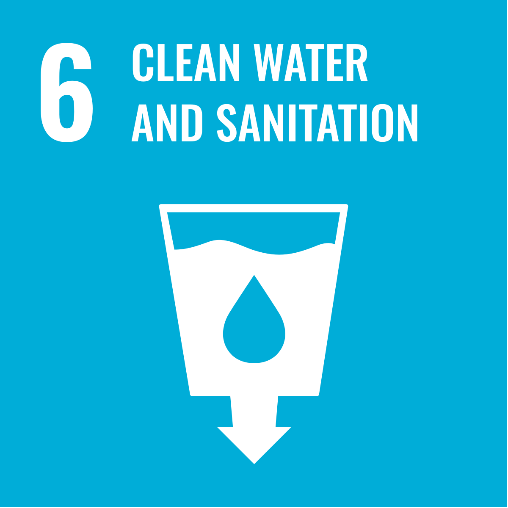
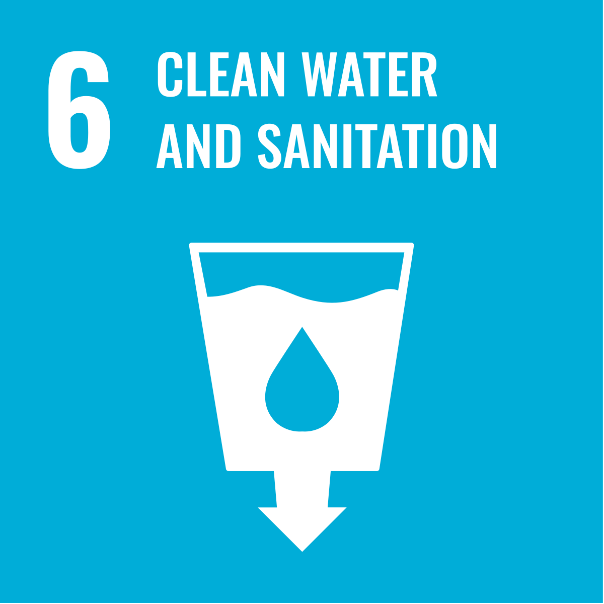

About Aqualogic
The World Health Organisation recommends approximately 2 litres of water per day. Both insufficient and excessive intake affect health, ranging from a drop in blood pressure, kidney problems and constipation to muscle cramps, reduced sporting performance and an increased risk of arrhythmias in older adults. We propose a wearable band that estimates hydration status through electrical and optical measurements together with physiological variables, all integrated into machine learning models. On the electrical side, the presence of water and electrolytes on the skin surface alters resistivity. We will measure skin resistance with contact electrodes and use variations in kilohms as input to the model. In the optical domain, a 970 nm emitter and a photodiode make it possible to calculate a local absorption coefficient using the Beer-Lambert law, which indicates the amount of water in superficial tissues. In addition to the methods already described, the wristband could also assess hydration based on skin elasticity. To this end, a flexible microstructure will be integrated into the inner part of the wristband (made of silicone), containing a piezoelectric or pressure sensor that applies a slight compression to the skin. The system measures the return response (time and intensity), allowing the determination of elasticity and, consequently, the level of hydration. These readings help to distinguish transient changes, such as sweat, from genuine variations in body water status. The overall model will be trained using regressions that relate resistance, absorption coefficient, estimated elasticity, temperature and body mass to the time since the last intake and the volume ingested. This will allow personalised alerts for fluid deficit or excess. Combining electrical and optical signals, corrected for temperature and body mass, provides a robust basis for inferring hydration status and reducing false positives caused by sweat or anatomical differences. Subsequently, our mobile application will collect binary feedback on the sensor measurements and will adjust the general model for each wristband and user.
 
